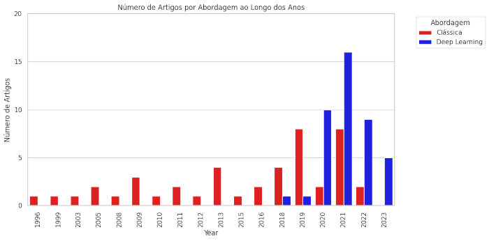

Aplicação de Redes Neurais Convolucionais 3D na Análise da Fragmentação e Microfraturas de Rochas em Mineração
Felipe Sinésio Trajano de Arruda
01/03/2024
À definir
João Santos Baptista & Maria de Lurdes Dinis
Gostaria de agradecer ao meu orientador, [Nome do Orientador], pelo apoio e orientação ao longo deste projeto. Agradeço também à minha família e amigos pelo suporte incondicional.
This study introduces an innovative approach to rock fragmentation analysis by leveraging 3D Convolutional Neural Networks (3D CNNs) on video data, addressing the limitations of traditional 2D image-based methods. The proposed methodology aims to significantly improve the accuracy and comprehensiveness of rock fragment characterization by fully utilizing the temporal and spatial information inherent in video sequences. Our approach centers on the development of a specialized 3D CNN architecture designed to process video inputs of blasted rock piles. Unlike conventional 2D CNNs, which analyze individual frames, our 3D CNN model leverages the temporal information from the entire video sequence. This enables the capture of complex features over time and space, crucial for accurate fragment segmentation and classification. By incorporating this temporal dimension, our method effectively addresses challenges such as fragment adhesion, stacking, and blurred edges that often lead to incorrect segmentation in traditional methods. The methodology involves three key steps: (1) video pre-processing to enhance 3D feature extraction, (2) implementation of the custom 3D CNN for volumetric fragment detection and segmentation, and (3) post-processing of 3D CNN outputs to refine the results. Our model is trained on a diverse dataset of rock fragmentation videos, enabling it to learn intricate three-dimensional patterns and relationships between fragments over time.This study contributes significantly to advancing rock fragmentation analysis by offering a more robust, precise, and truly three-dimensional tool for mining engineering. The integration of 3D video analysis with 3D CNNs opens new avenues for automatic and detailed characterization of fragmented rock materials, providing valuable insights for optimizing blasting operations and material handling processes in three-dimensional space.
Rock Fragmentation, 3D Convolutional Neural Networks, Real-Time Analysis, Mining Operations, Machine Learning
Este estudo introduz uma abordagem inovadora para a análise de fragmentação de rochas, utilizando Redes Neuronais Convolucionais 3D (CNNs 3D) em dados de vídeo, abordando as limitações dos métodos tradicionais baseados em imagens 2D. A metodologia proposta visa melhorar significativamente a precisão e a abrangência da caraterização de fragmentos de rocha, utilizando plenamente a informação temporal e espacial inerente às sequências de vídeo. A nossa abordagem centra-se no desenvolvimento de uma arquitetura CNN 3D especializada, concebida para processar entradas de vídeo de pilhas de rocha dinamitadas. Ao contrário das CNNs 2D convencionais, que analisam quadros individuais, nosso modelo de CNN 3D aproveita as informações temporais de toda a sequência de vídeo. Isso permite a captura de características complexas ao longo do tempo e do espaço, cruciais para a segmentação e classificação precisas de fragmentos. Ao incorporar esta dimensão temporal, o nosso método aborda eficazmente desafios como a adesão de fragmentos, o empilhamento e as margens desfocadas, que muitas vezes conduzem a uma segmentação incorrecta nos métodos tradicionais. A metodologia envolve três etapas principais: (1) pré-processamento de vídeo para melhorar a extração de características 3D, (2) implementação da CNN 3D personalizada para deteção e segmentação de fragmentos volumétricos, e (3) pós-processamento dos resultados da CNN 3D para refinar os resultados. Este estudo contribui significativamente para o avanço da análise de fragmentação de rochas, oferecendo uma ferramenta mais robusta, precisa e verdadeiramente tridimensional para a engenharia mineira. A integração da análise de vídeo 3D com CNNs 3D abre novos caminhos para a caraterização automática e detalhada de materiais rochosos fragmentados, fornecendo informações valiosas para otimizar as operações de detonação e os processos de manuseamento de materiais no espaço tridimensional.
Fragmentação de Rochas, Redes Neurais Convolucionais 3D, Análise em Tempo Real, Operações de Mineração, Aprendizado de Máquina
O setor mineiro sofreu uma rápida transformação nos últimos anos, com a digitalização das suas operações. Esta transformação tem sido frequentemente referida como a quarta revolução industrial ou Indústria 4.0. Um dos desenvolvimentos mais notáveis neste domínio tem sido a utilização crescente de abordagens baseadas na aprendizagem profunda para automatizar uma série de aplicações mineiras(Ronkin, et al, 2023).
A fragmentação de rochas, processo crucial nas operações de mineração e construção, envolve a quebra de maciços rochosos em fragmentos menores. A distribuição do tamanho desses fragmentos é um fator crítico para a eficiência das operações subsequentes, como carga, transporte e britagem. Tradicionalmente, a análise dessa fragmentação tem sido realizada através de diversos métodos (Abderrazak, Fredj, Boukarm, & Hadji, 2022), incluindo peneiração, contagem manual e, nas últimas três décadas, análise de imagens 2D. O método de análise por imagens tornou-se predominante, levando ao desenvolvimento de vários softwares comerciais como Wipfrag, Split-Desktop, e Fragalyst 3.0. Estes sistemas utilizam técnicas clássicas de processamento de imagem, como detecção de bordas, transformações morfológicas e segmentação baseada em limiares, para estimar a distribuição do tamanho dos fragmentos (Guo, Q., Wang, Y., Yang, S. et al., 2022).
No entanto, a metodologia para captura e análise de imagens ainda apresenta desafios consideráveis, especialmente quando se trata de obter uma representação precisa e consistente da distribuição de tamanhos de fragmentos em pilhas de material. Por exemplo, em (Tosun, 2018) na pedreira de calcário Arkavadi, o muckpile do segundo ensaio de explosão foi dividido em nove seções, e fotografias dessas seções foram tiradas. A distribuição de tamanhos que representa a totalidade da pilha foi então determinada usando-se o Wipfrag, combinando as distribuições obtidas a partir de cada fotografia.
Embora esta abordagem permita uma estimativa da distribuição de tamanhos, ela depende de uma série de pressupostos e passos que podem introduzir erros significativos. A combinação de distribuições de tamanhos de diferentes fotografias para representar a pilha inteira assume que cada fotografia é representativa de uma seção proporcional e que as condições de iluminação, ângulo da câmera e resolução são consistentes entre todas as imagens. Essas variáveis podem resultar em discrepâncias na análise e, consequentemente, em uma estimativa menos precisa da fragmentação real.
Ou seja, apesar de sua ampla adoção, essa abordagem apresenta limitações significativas:
O problema de investigação central é: Como podemos desenvolver um sistema de análise de fragmentação de rochas que supere as limitações das técnicas atuais, aproveitando o potencial do Deep Learning e da análise de vídeo?
Propomos investigar:
Esta abordagem oferece várias vantagens sobre os métodos atuais, tais como representação mais precisa da distribuição dos fragmentos. Uma maior robustez à variações de iluminação e perspectiva e a capacidade de capturar a dinâmica tridimensional do processo de fragmentação. O sucesso desta investigação tem o potencial de fazer avanços significativos à análise de fragmentação de rochas, fornecendo insights mais precisos e detalhados para otimizar as operações de mineração.
Entre os métodos de análise de fragmentação utilizados na indústria de mineração, destacam-se a técnica de peneiramento, que classifica fragmentos de rocha por diferentes tamanhos de malha, o método de contagem de blocos superdimensionados, onde os blocos maiores são contados manualmente, e o método da taxa de carregamento da pá, que avalia a fragmentação com base na velocidade de remoção do material. Além disso, a análise visual permite uma inspeção imediata da pilha pós-explosão, embora seja subjetiva e menos confiável. A fotogrametria, que utiliza medições tridimensionais com a ajuda de fotografias, e a técnica de análise de imagem, que proporciona uma distribuição precisa dos tamanhos sem interferir na produção, também são amplamente empregadas devido à sua precisão e eficiência.(Nanda & Naik, 2023)
A estimativa de fragmentação de rochas na indústria de mineração tem experimentado avanços significativos com a aplicação de sistemas de visão computacional (VC) baseados em aprendizado profundo (DL). Este texto apresenta uma visão geral do estado da arte neste campo, destacando as tendências atuais e os desafios enfrentados pelos pesquisadores e profissionais da área. Esta seção será dividida em duas partes. A primeira parte vamos falar sobre as tecnologias que estão sendo usadas para a análise de fragmentação de rochas, a segunda parte vai falar sobre o modelo de Redes Neurais Convolucionais 3D
Métodos para análise de fragmentação usando machine learning vêm sendo usados desde os anos 1990 (Lange,1990), mas somente com o avanço do aprendizado profundo, em particular das redes neurais convolucionais (cnn's da sigla em inglês), apresentadas em (Ronneberger, 2015) é que obtivemos resultados mais significativos na aplicação da inteligência artificial ao problema.(Vu et al. 2021) e um vemos um crescente interesse nesse campo de pesquisa, como podemos ver na figura abaixo.

Abordagens de Visão Computacional
Quando falamos de Redes Neurais Convolucionais, estamos falando de uma família de modelos de aprendizado profundo que possuem uma arquitetura em comum. (Falar sobre a arquitetura ou é muito específico pra esse texto????)
A fragmentação de rochas envolve a identificação e diferenciação de múltiplos fragmentos rochosos de vários tamanhos a partir de dados visuais. As principais abordagens de CV utilizadas neste campo incluem:
Apesar da diversidade de métodos, ainda não há consenso sobre qual abordagem é mais eficaz para a estimativa de fragmentação de rochas.
Arquiteturas de Aprendizado Profundo
As arquiteturas de DL mais comumente utilizadas neste campo incluem:
Desafios e Oportunidades Atraso Tecnológico: Muitos estudos em fragmentação de rochas estão atrasados em relação aos avanços gerais em CV nos últimos 2-3 anos. Otimização de Modelos: Há uma necessidade de melhorar a precisão dos modelos através de técnicas como meta-aprendizado e outras formas de regularização. Computação de Alto Desempenho: A implementação de técnicas avançadas de otimização e paralelização pode permitir treinamento mais eficiente em sistemas de alto desempenho e inferência em dispositivos de baixo desempenho em instalações industriais. Escolha de Arquitetura: A seleção da arquitetura ideal, considerando prós e contras de diferentes abordagens, requer pesquisas adicionais.
Conclusão: O estado da arte na análise de fragmentação de rochas está em rápida evolução, com um movimento claro em direção a métodos mais sofisticados baseados em aprendizado profundo e processamento 3D. As CNNs 3D representam uma fronteira promissora neste campo, oferecendo o potencial de superar muitas das limitações dos métodos atuais. No entanto, sua aplicação efetiva ainda enfrenta desafios significativos, principalmente em termos de aquisição de dados, poder computacional e integração com sistemas existentes. A pesquisa proposta visa abordar esses desafios, contribuindo para o avanço do estado da arte neste domínio crítico para a indústria de mineração.
Objetivos Gerais:
O plano de trabalhos será desenvolvido em etapas, incluindo a revisão bibliográfica, desenvolvimento do modelo, coleta e processamento de dados, treinamento e validação do modelo, implementação em campo e análise dos resultados. Cada etapa será detalhada com os prazos e recursos necessários.
A pesquisa adotará uma abordagem quantitativa, utilizando 3D CNNs para análise de vídeos. Serão capturados vídeos do material nas pás dos caminhões e no material despejado nos moinhos. Os vídeos serão processados e utilizados para treinar o modelo 3D CNN. A precisão do modelo será validada comparando os resultados com métodos tradicionais de análise de fragmentação.
Em caso de dificuldades na coleta de dados, serão utilizadas bases de dados secundárias. Para problemas técnicos no desenvolvimento do modelo, serão consultados especialistas em aprendizado de máquina.
Anexar Gráfico